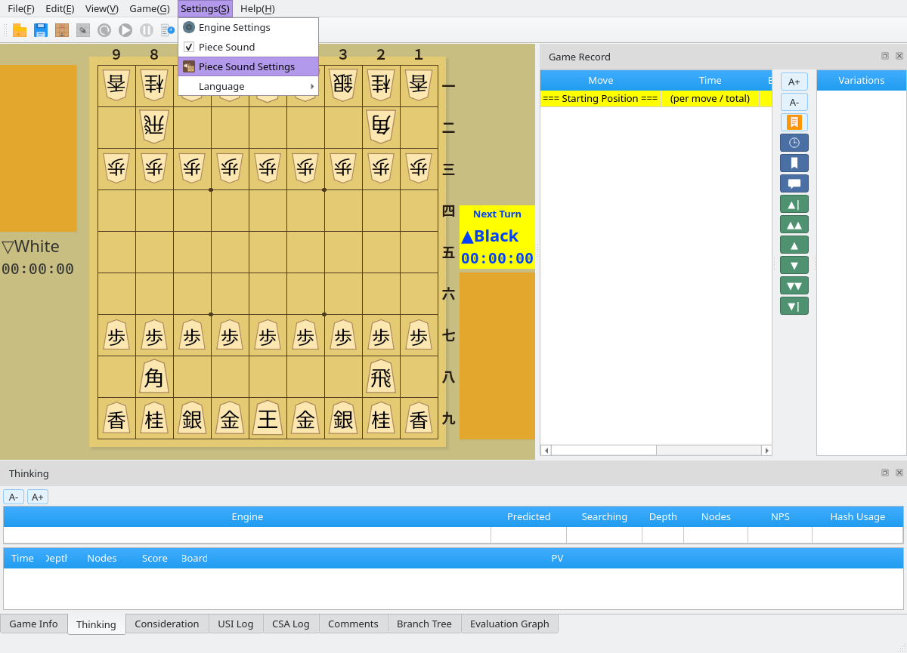
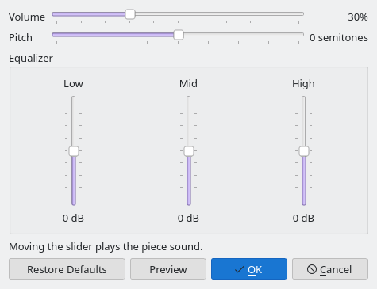

Piece Sound
A crisp click plays the moment a piece lands on the board
Screenshots were captured on Linux with the English interface.
Turn the Piece Sound On or Off
Toggle the sound at any time from the Settings menu
Open Settings → Piece Sound
The Settings menu contains a Piece Sound item. When it is checked, a click plays with every move; it is on by default. Uncheck it to silence the sound, and check it again to restore it. Click a screenshot to view it at its original size.
{kind=link}

Settings menu: Piece Sound toggles the sound, Piece Sound Settings adjusts it
Settings Are Saved Automatically
The on/off state is saved automatically and restored the next time you start the application. The same items are available on the Settings tab of the Menu Panel.
Adjust Volume and Tone
The Piece Sound Settings dialog controls volume, pitch, and a three-band equalizer
Open Settings → Piece Sound Settings
The dialog shows horizontal sliders for Volume and Pitch, plus three vertical sliders for Low, Mid, and High. The piece sound plays each time you move a slider, so you can tune it by ear. Press Preview at any time to hear the current settings.
{kind=link}

Piece Sound Settings dialog (default values)
Shape the Sound with the Sliders
- Volume: 0–100%, 30% by default. The scale follows perceived loudness, so 50% sounds roughly half as loud as 100%.
- Pitch: −12 to +12 semitones. Raising it gives a higher, shorter tick; lowering it gives a deeper, longer knock.
- Equalizer: Low, Mid, and High bands from −12 to +12 dB. Boosting Mid adds punch; cutting High makes the sound softer.
Confirm, Cancel, or Restore Defaults
Press OK to keep your changes. Cancel returns to the settings that were active when the dialog opened. Restore Defaults resets the sound to 30% volume with pitch and equalizer at zero. Confirmed settings are saved automatically and restored on the next start.
When the Piece Sound Plays
It plays when a piece moves on the board during a game, not while browsing a record or editing a position
| Situation | Sound | Notes |
|---|---|---|
| Human move | Plays | Your own moves in human vs. human and human vs. engine games |
| Engine move | Plays | Engine moves in human vs. engine and engine vs. engine games |
| Network game (CSA) | Plays | Both your moves and your opponent's moves |
| Opening book move | Plays | Moves played from the opening book window count as board moves |
| Record playback and branch navigation | Silent | Stepping through a loaded game record |
| Position editing, analysis, consideration | Silent | Rearranging pieces or displaying positions during engine analysis |
The sound was designed from an analysis of real boxwood pieces striking a kaya board. Playback uses Qt Multimedia through the operating system's default audio output.